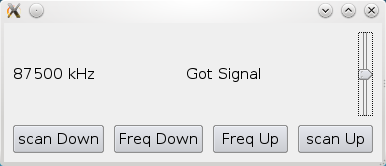
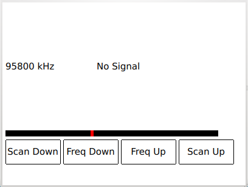

Radio Overview
The Qt Multimedia API provides a number of radio related classes for control over the radio tuner of the system, and gives access to Radio Data System (RDS) information for radio stations that broadcasts it.
Radio Features
The Radio API consists of two separate components. The radio tuner, QRadioTuner or the Radio QML type, which handles control of the radio hardware as well as tuning. The other is the radio data component, either QRadioData or the RadioData QML type, which gives access to RDS information.
Radio Implementation Details
The actual level of support depends on the underlying system support. It should be noted that only analog radio is supported, and the properties of the radio data component will only be populated if the system radio tuner supports RDS.
Examples
There are two examples showing the usage of the Radio API. One shows how to use the QRadioTuner class from C++. The other shows how to implement a similar application using QML and Radio.
Radio Example
This image shows the example using the QRadioTuner API.

The example reads the frequency from the radio tuner, and sets the "Got Signal" text based on the signal strength. The buttons allow the user to tune and scan up and down the frequency band, while the slider to the side allows volume adjustments.
Only the FM frequency band is used in this example.
Declarative Radio Example

This example has the same functionality of the regular radio example mentioned above, but it includes a nice horizontal dial showing the position of the current frequency inside the band.
Reference documentation
C++ Classes
QML Types
Access RDS data from a QML application |